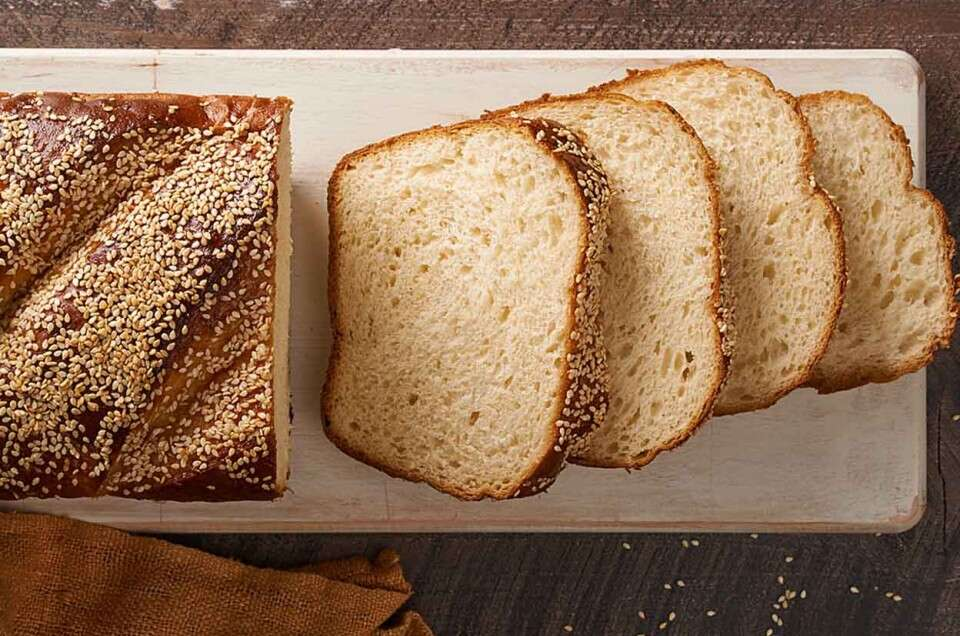

Ja-Pan #1 - Fish Bread

Even though the name might lead you to believe French toast is…French, our research tells us it’s not that straightforward. Instead, the concept is believed to date as far back as a 1st-century Roman cookbook. And since that time, similar recipes with different names have been found in Germany, England, Italy, France, Canada, and beyond.
Ingredients
- 3 Tbsp cornstarch (cornstarch helps the batter crisp up // we haven’t tested other starches)
- 2 cup almond milk (we also think you could use oat or coconut milk)
- 2 tsp maple syrup
- tsp vanilla extract
- 1/8 tsp black salt (kala namak — adds eggy flavor // or sub sea salt)
- 1/2 tsp ground cinnamon
- 1 Tbsp mashed ripe banana (adds a custard-like texture and subtle banana flavor // omit if you don’t like banana flavor)
- 1 dash ground turmeric (optional // for color)
- BATTER: To a shallow bowl or baking dish add cornstarch, then slowly add in dairy-free milk while whisking. Whisk fully to ensure there are no clumps. Then add maple syrup, vanilla extract, black salt (or sea salt), cinnamon, ripe mashed banana (adds custardy texture and subtle sweetness — leave out if you dislike banana), and turmeric (optional — for color). Whisk again to combine.
- Next, heat a large skillet over medium heat.
- DIP: In the meantime, add your bread slices to the batter and soak on each side for ~15-20 seconds. It shouldn’t be super soggy, but they should be well coated. Option to dust each side with a bit more cinnamon.
- COOK: Add a bit of vegan butter to the hot skillet and as many pieces of French toast as will fit comfortably. Cook for ~2 minutes, or until the underside is golden brown. Then flip with a fork or spatula and cook for 2 minutes more, or until both sides are golden brown and caramelized. Repeat as needed until all French toast is prepared.
- SERVING: Serve as is, or (our preferred) with vegan butter or nut butter, fresh fruit, and maple syrup. You could also sprinkle with organic powdered sugar or add coconut whipped cream for a more decadent touch.
- STORAGE: Best when fresh. Not freezer friendly. You can make the batter up to 2 days in advance, though best when fresh. Enjoy!